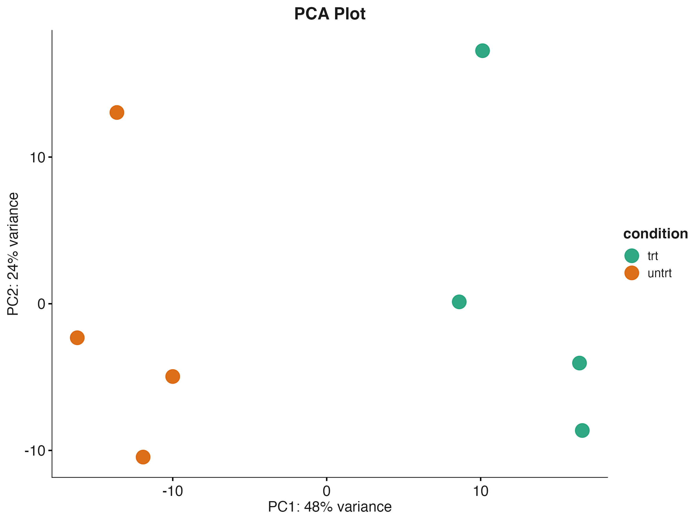
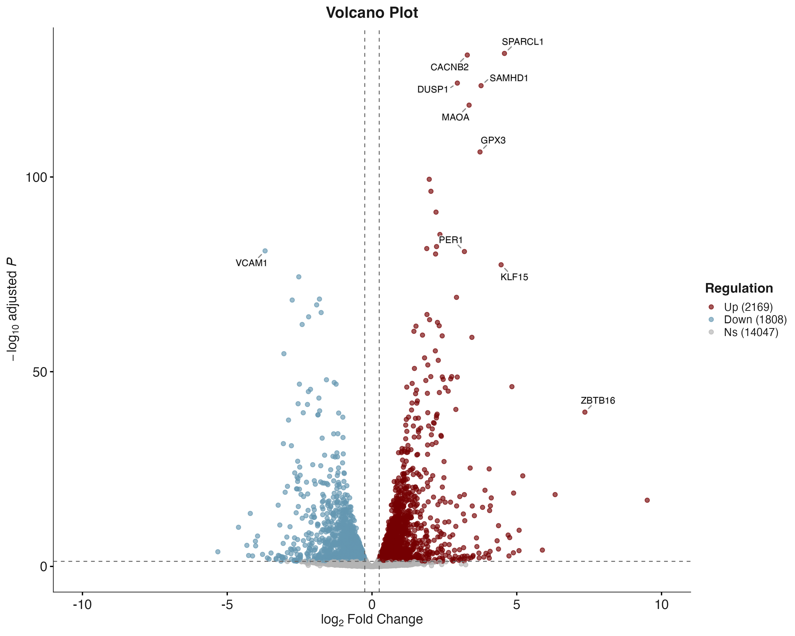
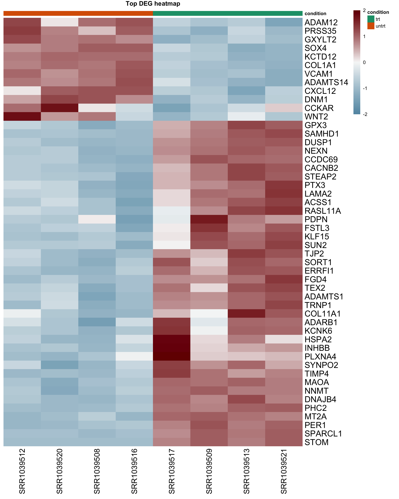
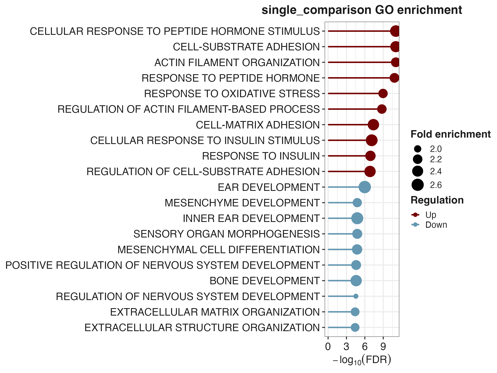
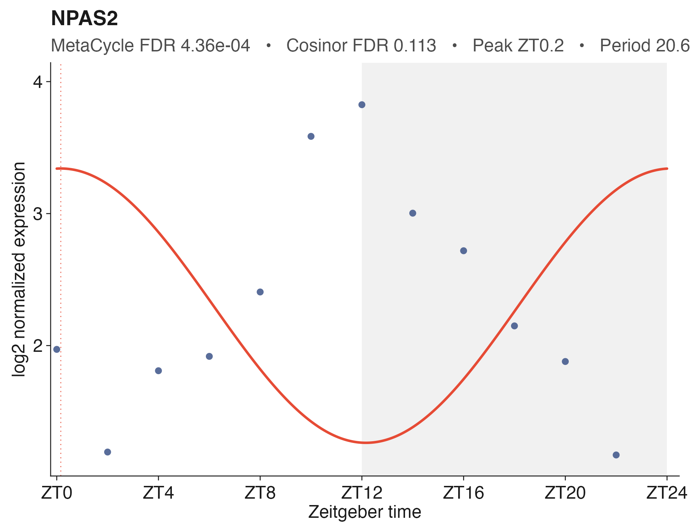
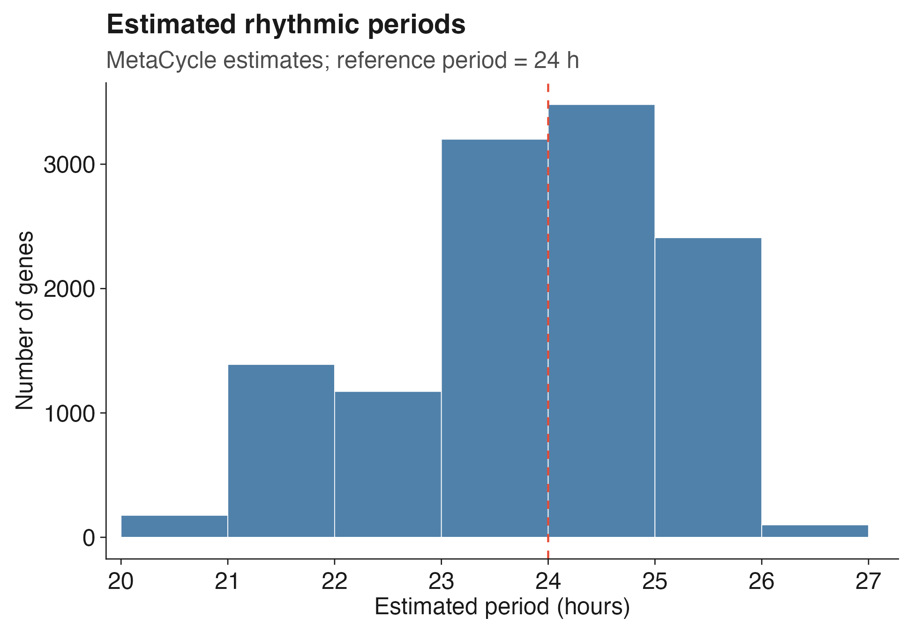

An integrated R framework for automated bulk RNA-seq differential expression, functional enrichment, circadian rhythmicity analysis, and reproducible reporting.
📖 Documentation: https://ymbouamboua.github.io/DEGgo/
Highlights
- One-command RNA-seq workflow
- DESeq2, edgeR and limma
- GO enrichment
- Circadian rhythmicity (MetaCycle + Cosinor)
- Publication-quality figures
- HTML, PDF and PowerPoint reports
- Reproducible analyses
Workflow
Raw counts
│
▼
Input validation
│
▼
Sample QC
│
▼
Expression filtering
│
▼
Differential expression
│
├── PCA
├── Volcano
├── Heatmap
├── GO
└── Reports
│
▼
Circadian analysis
├── MetaCycle
├── Cosinor
├── Differential rhythmicity
└── Publication figures- Input validation
- Quality control
- Expression filtering
- Differential expression
- PCA / Volcano / Heatmap
- GO enrichment
- Reports
- Reproducibility
- Optional rhythmicity analysis
Gallery
| PCA | Volcano |
|---|---|
 |
 |
| Heatmap | GO |
|---|---|
 |
 |
| Rhythm | Period |
|---|---|
 |
 |
Installation
install.packages("remotes")
remotes::install_github("ymbouamboua/DEGgo")
library(DEGgo)Optional:
install.packages(c("MetaCycle","cosinor","cosinor2"))Quick Start
Input data
Example analysis with the airway dataset
The package includes a ready-to-use RNA-seq dataset derived from the Bioconductor airway package (Himes et al.), providing a reproducible example for testing and learning the complete DEGgo workflow.
counts <- read.delim(
system.file(
"extdata",
"airway_counts.tsv",
package = "DEGgo"
),
check.names = FALSE
)
metadata <- read.delim(
system.file(
"extdata",
"airway_metadata.tsv",
package = "DEGgo"
),
check.names = FALSE
)Single differential expression analysis
results <- run_deggo(
counts=counts,
metadata=metadata,
organism="human",
method="DESeq2",
design_formula=~treatment,
contrast=c("treatment","treated","untreated")
)The comparison is interpreted as:
treated versus untreatedTherefore, positive log2FoldChange values represent higher expression in the treated group.
Pairwise differential expression analysis
Create a combined comparison variable when pairwise comparisons involve several metadata columns:
metadata$group <- interaction(
metadata$condition,
metadata$sex,
sep = "_",
drop = TRUE
)Define the comparisons:
pairwise_contrasts <- list(
treatment_vs_control_male = c(
"group",
"treatment_male",
"control_male"
),
treatment_vs_control_female = c(
"group",
"treatment_female",
"control_female"
),
male_vs_female_control = c(
"group",
"control_male",
"control_female"
)
)Run the pairwise workflow:
pairwise_results <- run_deggo(
counts = counts,
metadata = metadata,
organism = "mouse",
method = "DESeq2",
analysis_mode = "pairwise",
sample_col = "sample",
design_formula = ~ group,
pairwise_group_cols = c(
"condition",
"sex"
),
pairwise_contrast_col = "group",
pairwise_contrasts = pairwise_contrasts,
output_dir = "DEGgo_pairwise_results"
)DEGgo output files
The run_deggo() workflow automatically organizes all results into a structured project directory.
DEGgo_results/
├── qc/
│ ├── raw_qc/
│ ├── filtered_qc/
│ └── sample_qc_summary.tsv
├── differential_expression/
│ ├── all_genes.tsv
│ ├── significant_genes.tsv
│ └── DEG_summary.tsv
├── pca/
│ ├── PCA.png
│ ├── PCA.pdf
│ └── PCA_coordinates.tsv
├── volcano/
│ ├── Volcano.png
│ ├── Volcano.pdf
│ └── Volcano_data.tsv
├── heatmap/
│ ├── Heatmap.png
│ ├── Heatmap.pdf
│ └── Heatmap_matrix.tsv
├── go_enrichment/
│ ├── GO_results.tsv
│ ├── GO_dotplot.png
│ ├── GO_barplot.png
│ └── GO_summary.tsv
├── reports/
│ ├── DEGgo_report.html
│ ├── DEGgo_report.pdf
│ └── DEGgo_summary.pptx
├── reproducibility/
│ ├── run_parameters.tsv
│ ├── session_info.txt
│ ├── package_versions.tsv
│ └── analysis_manifest.tsv
└── logs/
└── DEGgo.logThe exact contents depend on the selected analysis method (DESeq2, edgeR, or limma), analysis mode (single or pairwise), and optional downstream analyses such as Gene Ontology enrichment.
Public circadian example
DEGgo includes a fully reproducible workflow based on the public baboon transcriptomic atlas (GSE98965, Mure et al., Science 2018).
results <- run_public_circadian_example(
tissue_code="LIV",
output_dir="Circadian_results"
)Rhythmicity analysis
run_deggo_rhythmicity() detects rhythmic genes in circadian or periodic time-course experiments using MetaCycle, cosinor regression, or both.
rhythm_results <- run_deggo_rhythmicity(
expr = expression_matrix,
metadata = metadata,
sample_col = "sample",
time_col = "time",
assay = "log2_normalized",
methods = c("meta2d", "cosinor"),
period_range = c(20, 28),
cycle_length = 24,
padj_cutoff = 0.05,
output_dir = "DEGgo_rhythmicity_results"
)Rhythmicity output files
The rhythmicity workflow produces files such as:
DEGgo_rhythmicity_results/
├── plots/
│ ├── rhythmicity_period_distribution.png
│ ├── rhythmicity_pvalue_comparison.png
│ └── individual_genes/
├── results/
│ ├── metacycle_results.tsv
│ ├── cosinor_results.tsv
│ ├── cosinor_differential_rhythmicity.tsv
│ └── rhythmicity_summary.tsv
└── reproducibility/Main functions
| Function | Description |
|---|---|
run_deggo() |
Run the complete bulk RNA-seq differential expression workflow |
run_deggo_rhythmicity() |
Detect rhythmic genes using MetaCycle and cosinor regression |
check_raw_counts() |
Validate raw count matrices and sample identifiers before analysis |
explore_bulk_rnaseq() |
Perform exploratory quality control on raw RNA-seq data |
remove_flagged_samples() |
Remove low-quality samples identified during quality control |
marker_score_check() |
Assess marker gene expression for biological sample validation |
run_sample_qc() |
Perform post-filtering sample quality control and diagnostics |
run_go_enrichment() |
Perform Gene Ontology over-representation analysis |
plot_go_terms() |
Generate publication-ready Gene Ontology enrichment plots |
plot_all_go_terms() |
Compare Gene Ontology enrichment across multiple analyses |
extract_expression() |
Extract raw, normalized, log2-normalized, or VST expression values |
plot_gene_expression() |
Visualize selected genes across biological groups |
plot_gene_heatmap() |
Visualize marker or selected genes as a heatmap |
plot_heatmap() |
Generate heatmaps of differentially expressed genes |
plot_pca() |
Perform principal component analysis |
plot_volcano() |
Generate publication-ready volcano plots |
generate_deggo_report() |
Generate an automated HTML or PDF analysis report |
generate_deggo_pptx() |
Generate a PowerPoint summary report |
deggo_extract_deg_genes() |
Extract selected genes from differential expression results |
deggo_extract_go_genes() |
Extract genes associated with enriched Gene Ontology terms |
deggo_extract_go_genes_pairwise() |
Extract GO-associated genes across pairwise comparisons |
deggo_extract_go_keywords() |
Search enriched Gene Ontology terms using biological keywords |
Supported organisms
DEGgo provides built-in annotation support for the following organisms:
| Organism | Parameter | OrgDb package |
|---|---|---|
| Human (Homo sapiens) | "human" |
org.Hs.eg.db |
| Mouse (Mus musculus) | "mouse" |
org.Mm.eg.db |
| Rat (Rattus norvegicus) | "rat" |
org.Rn.eg.db |
Additional organisms can be analyzed by supplying a compatible Bioconductor OrgDb annotation database.
Rhythmicity analysis itself does not require an OrgDb package when the expression matrix already contains suitable gene identifiers. A custom annotation table can be provided through gene_annotation.
Documentation
A complete tutorial and advanced examples are available in the package vignette.
browseVignettes("DEGgo")